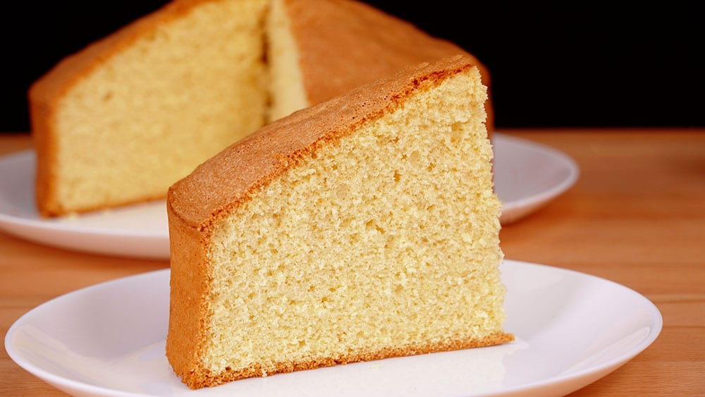

Flan con Dulce de Leche
Flan con Dulce de Leche
Ingredientes
| Ingredientes | Cantidades |
|---|---|
| Leche | 500 ml |
| Huevos | 4 unidades |
| Azúcar | 150 gramos |
| Esencia de vainilla | 1 cucharadita |
| Dulce de leche | 200 gramos |
Paso a Paso hecho a mano
1.Coloca el azúcar en una sartén y prepara un caramelo.
2.Vierte el caramelo en un molde para flan.
3.Bate los huevos en un recipiente.
4.Agrega la leche y la esencia de vainilla.
5.Mezcla bien todos los ingredientes.
6.Vierte la preparación en el molde acaramelado.
7.Cocina a baño María en horno a 180°C durante 50 minutos.
8.Deja enfriar, desmolda y sirve con dulce de leche.
Paso a Paso Video
Paso a Paso

Bizcochuelo
Bizcochuelo
Ingredientes
| Ingredientes | Cantidades |
|---|---|
| Huevos | 4 unidades |
| Azúcar | 200 gramos |
| Harina leudante | 200 gramos |
| Esencia de vainilla | 1 cucharadita |
Paso a Paso hecho a mano
1.Bate los huevos junto con el azúcar.
2.Agrega la esencia de vainilla.
3.Incorpora la harina poco a poco.
4.Vierte la mezcla en un molde enmantecado.
5.Hornea a 180°C durante 35 minutos.
6.Deja enfriar antes de desmoldar.
Paso a Paso Video
Paso a Paso

Budin de vainilla
Budín de Vainilla
Ingredientes
| Ingredientes | Cantidades |
|---|---|
| Harina leudante | 250 gramos |
| Azúcar | 150 gramos |
| Huevos | 3 unidades |
| Leche | 100 ml |
| Aceite | 100 ml |
| Esencia de vainilla | 1 cucharada |
Paso a Paso hecho a mano
1.Bate los huevos con el azúcar.
2.Agrega el aceite, la leche y la esencia de vainilla.
3.Incorpora la harina poco a poco.
4.Mezcla hasta obtener una preparación homogénea.
5.Vierte la mezcla en una budinera enmantecada.
6.Hornea a 180°C durante 40 minutos.